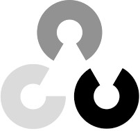
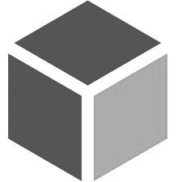

Marius Steger
Welcome to my personal website which serves the purpose of a resume. I am an engineering masters college student at the Karlsruhe Institute of Technology with huge interest in Machine Learning and Medicine Technology. Feel free to look around. You can also reach out to me via eMail.
Experience
Research Assistant
Renumics · COGNITIVE CAE AUTOMATION · KarlsruheI started working here while I was doing my bachelor thesis on 3D Deep Learning for engineering tasks, more specific geometry recognition in CAD models. I am currently working on 3D dataset and pipelines to benchmark different state of the art Deep Learning approaches based on various data representations such as voxels or pointclouds.
Product Engineering R&D Intern
Stryker · Advanced Guidance Technologies · FreiburgAt Stryker Freiburg I completed two major projects. I developed an automated endurance test stand and implemented monitoring (machine vision) and analyzing (statistics) methods with Python and Matlab. The other project included a feasibility study and performance analysis with prototypes based on the results and optimization proposals I found doing a cost analysis of an existing product.
Tutor Engineering Mechanics I + II
Institute of Engineering Mechanics · Continuum Mechanics · KarlsruheI have been teaching small groups of college students (8-10) the lecture content in a weekly tutorial. I also helped them with their weekly assignments and tested their knowledge with short oral exams. Therefore I have been certified by PEBA with the "Start in die Lehre" certificat.
KjG youth leader
KjG Rauenberg · social engagementRepresentative leadership and organisation of club matters. I have been organizing and leading the weekly open and intern meetings and represent the club in public. Before I took the lead I gathered experience being deputy youth leader for one year.
Education
Karlsruhe Institute of Technology - KIT
Karlsruhe Institute of Technology - KIT
Grade: 1.8
Skills
-

-

-

- 
-

- 
-

-

- Project management & Agile Development: Gantt, Scrum, Kanban
- CAD & PLM
- Data Science
- Machine Learning & Deep Learning
- Computer Vision
Interests & Projects
raspberrypi
·
inventing
·
coding
I am into experimenting with RaspberryPis which allows me to easily set up prototypes and try out new ideas.
I am also working on coding and data science projects in my free time.
- Grocery Shopping WebApp (Covid-19; deployed)
- School Info-Hub with agenda WebApp (deployed)
- Kaggle Competitions
- Machine Learning Hackathons
- Webdesign (e.g. this page)
- Smart gardening system with WebApp
- 6 dof robot arm (early stage)
- Following webcam